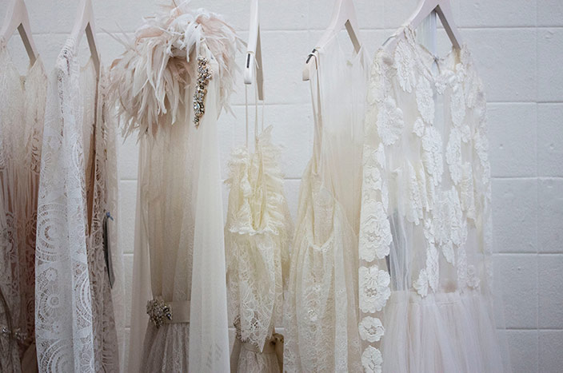
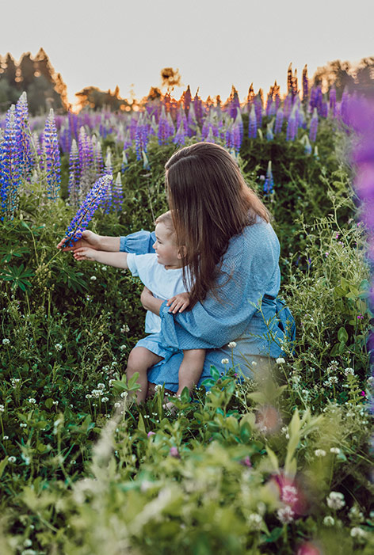

La mode évolutive, pour une consommation responsable
Des vêtements évolutifs, ce sont des vêtements conçus pour grandir avec vos enfants. Ainsi, le même vêtement peut faire à différente grandeur. On peut ainsi acheter un seul morceau qui fera plusieurs années avant de devenir trop petit. Cela permet ainsi de consommer moins de vêtements pour des enfants qui, en pleine croissance, ne les porteront de toute façon que quelques semaines.
Comment ça fontionne?
Plus l’enfant est petit, plus on plie les bandes élastiques aux extrémités des vêtemetns et plus il grandit, plus on les déplie pour que le vêtement s’adapte à l’évolution de l’enfant. Les matériaux utilisés permettent une belle liberté de mouvements pour vos petits loups même lorsque le vêtement est plus ajusté. Les pantalons sont conçus pour faire de la grandeur 3 mois à la grandeur 3 ans et les chandails pour s'ajuster de la grandeur 12 mois à la grandeur 3 ans.